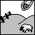
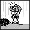
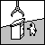
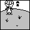
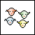

Absurd? Insane?! Supersheep! A large ovinite meteor hits one of your plots of land. They gain superpowers and fly away. You lose all but one sheep on that lot.
Black Sheep Friday As sheep stocks crash, people pull money out of their banks to pay their debts. Interest rates increase by 5%.
Bull Sheep
Players may not trade until your next turn.
Bust Ore Boom
Orelando, a major importer of Anthonium Ore switches to eco-friendly Ethanonium Gas. Demand for Anthonium Ore decreases, as does its value.

Don't Give Me That Sheep
No other players collect resources until your next turn.
Fight Ore Flight
Paperweights have made a comeback! Demand for Anthonium Ore soars, and so does its value.
Grub For Money
Two words. Grub Soup. Demand for Grub soars, as does its value.
Herbal Magic Weight Loss The latest trend in weight loss programs has demand for the Very Green Grass soaring, and thus its value.
I'm Lovin' It
Demand for smiles increases, as does the value of Tender Love and Care.

I Need to Go Take a Sheep Take another player’s sheep and place it on a tile you control. The sheep taken cannot be the only sheep on a tile and cannot be on a capital tile.

Invasion of the Sheep Take control of a tile belonging to another player that is adjacent to a tile you already control.
Mad Sheep Disease The Japanese decide to close their borders due to Ovine Spongiform Encephalopathy, so demand for sheep decreases. Each piece of land contributes 25% less resource points for a bit.

Microsoft Sheep Inc. Microsoftsheep has bought up the competing sheep buyers, creating a monopsony. Each piece of land contributes 10% less resource points for a bit.
Money For Grub
Heavy tariffs have been imposed as to protect homegrown grubs in many major importer countries. Demand for your Grub drops, sending its value to the bargain bin.
Sheep Mania Mattel Inc releases a new line of Barbie Sheep, increasing the demand for sheep in general. Each piece of land contributes 10% resources point for a bit.
Sheep Market Name a resource type. If no other player owns a land of that resource type, you possess a monopoly. Each land you possess of that type contributes 10% more resource points for a bit.
Sheepen Harper's Fiscal Policy Sheepen Harper decides to decrease the income taxes on the resources of the sheep. Each player receives 10% more resource points for each tile for a while.
Sheeptastic! Population may be performed twice.
Sheep-Tippers They strike in the night leaving your sheep a tad tipsy. Each piece of land contributes 20% less resource points for a bit.
Sheep Without Borders Globalization may be performed with non-adjacent players.
She Loves Me Not Even-petalled flowers dominate the industry. Disheartened fellows have no room for Tender Love and Care. Values jump off the bridge.
Silence of the Sheep Do not collect resources this turn. Do not herd your sheep.
Supersheep Exploration may be performed twice.
The Other Side of the Hill
Scientists have produced Extremely Green Grass, causing demand for Very Green Grass to plummet, and its value follows suit.
Xenophobic Sheep
Uncertainty in the US dollar has caused the value of the Canadian dollar to skyrocket. Thus, the effective price of the sheep has increased, so demand decreases. Each player receives 10% less resource points for a bit.